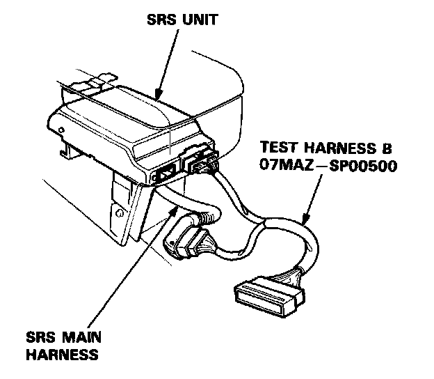
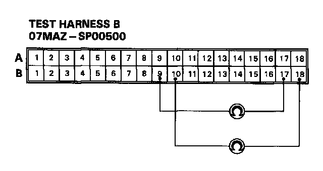
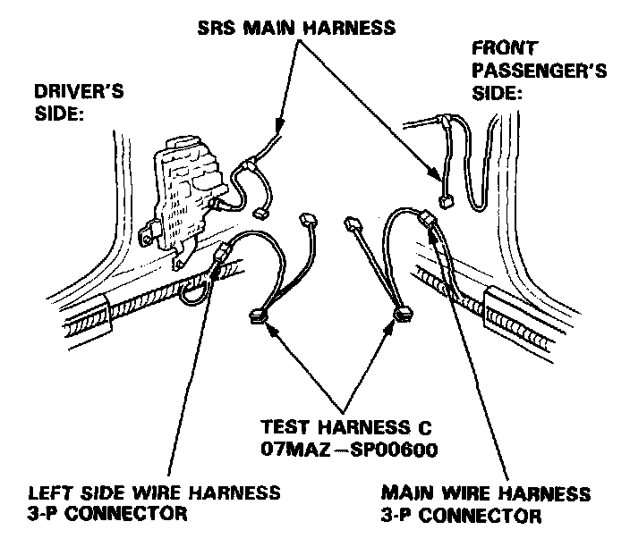
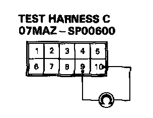
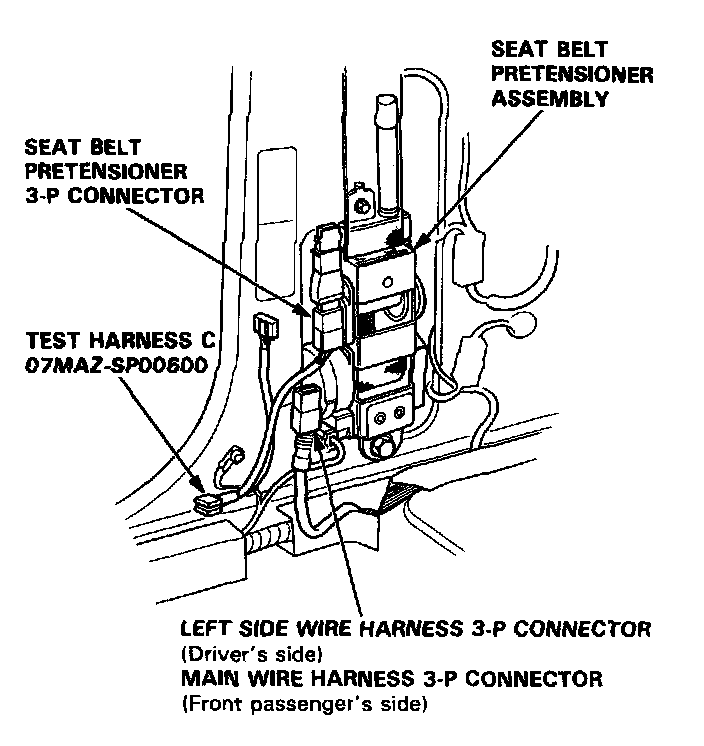
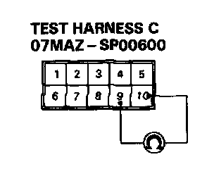

Failure Mode G
Mode G: Open in seat belt pretensioner (driver's side or front passenger's side).
NOTE: The original radio has a coded theft protection circuit. Be sure to get the code number before disconnecting the battery cables.
1. Before disconnecting any part of the SRS wire harness, disconnect both the negative and positive battery cables. Then install the short connectors - refer to "Short Connector Installation" procedure.
2. Connect Test Harness B between the SRS unit and SRS main harness 18-P connector.

3. Reconnect the seat belt pretensioner 3-P connector, then measure the resistance between the driver's seat belt pretensioner terminals B9 and B17, and between the front passenger's seat belt pretensioner terminals B10 and B18.

- If resistance is more than 0.2k ohms, go to step 4.
- If resistance is less than 0.2k ohms, the SRS unit is faulty. Substitute a known-good SRS unit and recheck the voltages according to the chart in the "SRS Indicator Stays On Continuously" procedure.
4. Disconnect the connector between the SRS main harness and the left side wire harness 3-P connector (driver's side), and between the SRS main harness and the car main wire harness 3-P connector (front passenger's side). First, connect Test Harness C to the left side wire harness side of the driver's pretensioner 3-P connector, and check resistance, then connect it to the car main wire harness side of the front passenger's pretensioner 3-P connector, and check resistance again.

5. Measure the resistance between the No. 9 terminal and the No.10 terminal.

- If resistance is more than 0.2k ohms, go to step 6.
- If resistance is less than 0.2k ohms, the SRS main harness is faulty. Replace it and recheck the voltages according to the chart in the "SRS Indicator Stays On Continuously" procedure.
6. Disconnect the 3-P connector from the driver's and front passenger's seat beet pretensioners, then connect Test Harness C to the seat belt pretensioner side of the 3-P connector, first on the driver's side, then on the front passenger's side.

7. Measure the resistance between the No.9 terminal and the No.10 terminal.

- If resistance is more than 0.2k ohms, the seat belt pretensioner is faulty. Replace it and recheck the voltages according to the chart in the "SRS Indicator Stays On Continuously" procedure.
- If resistance is less than 0.2k ohms, the left side wire harness (driver's side) or the car main wire harness (front passenger's side) is faulty. Replace the faulty harness and recheck the voltages according to the chart in the "SRS Indicator Stays On Continuously" procedure.